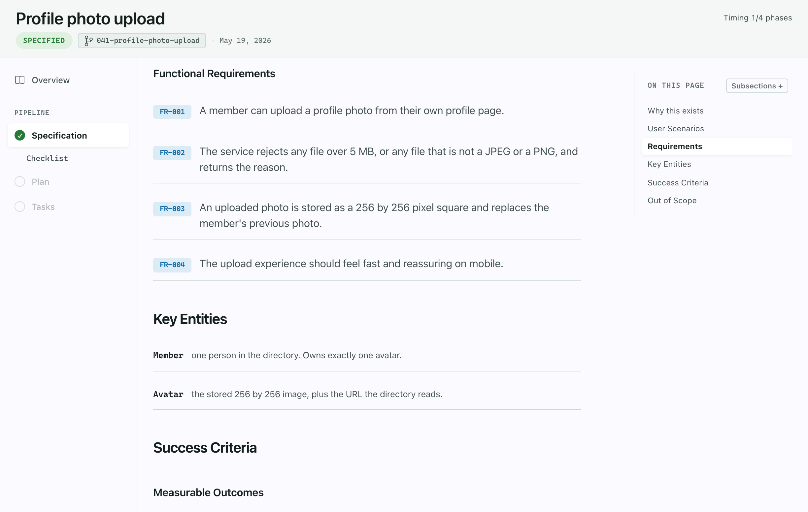
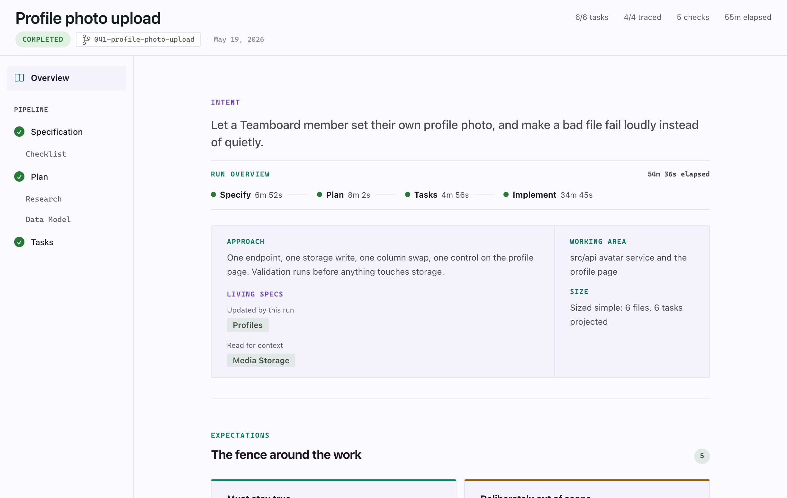
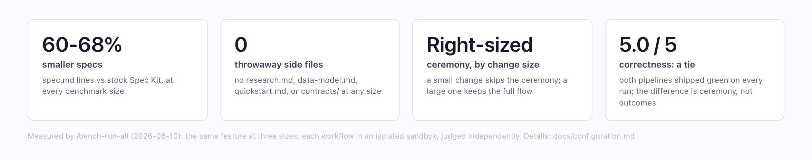
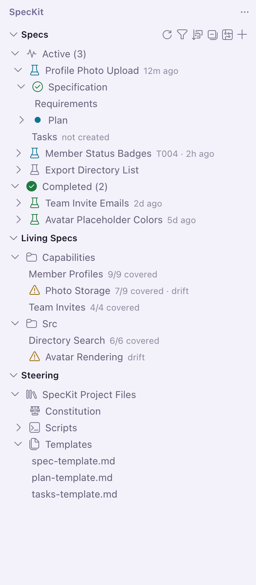
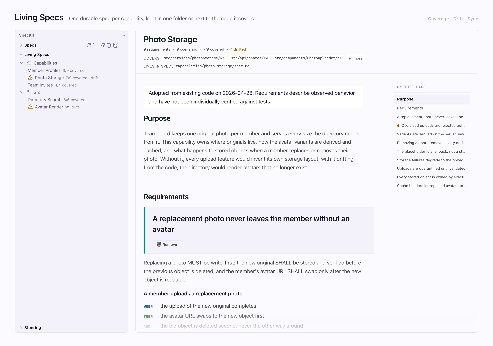

For GitHub Copilot users
Copilot writes the code.
You never see the plan.
Spec Kit turns an idea into spec, plan and tasks. Spec Kit Companion puts that whole run on screen, in VS Code, while it happens.
Specify
Plan
Tasks
Done

See the run
Every phase,
timed as it ran
Intent, run timeline, approach and size on one page. No guessing which step your assistant is on.

The Companion pipeline
Leaner specs,
same correctness
60–68%
less spec to read, measured against the stock pipeline on the same features
Right-sizing is built in: a small change gets a small spec, and the pipeline still runs through to done.

Make it yours
Your workflow.
Your assistant.
Swap the pipeline: stock Spec Kit or Spec Kit Companion, per project or per spec.
Shape your own commands and steps, no fork required.
Copilot CLI, Copilot in the IDE, Claude, Gemini, Codex, Cursor and more.

Free and open source
See and steer
everything your AI builds
Install Spec Kit Companion from the VS Code Marketplace, open the sidebar, and open the live sample. Two minutes, nothing to author.

Search
Spec Kit Companion
in VS Code
github.com/alfredoperez/speckit-companion